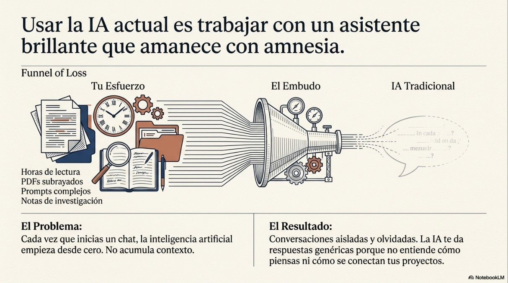
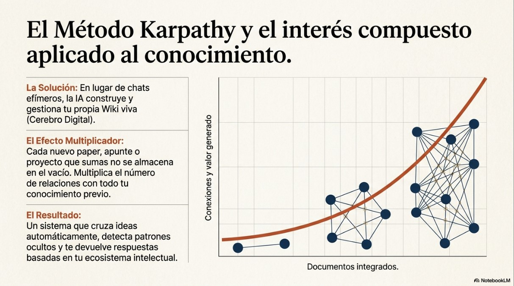
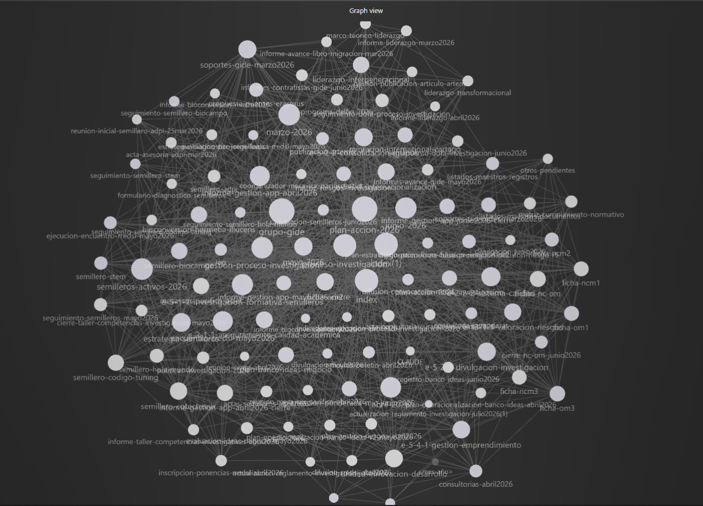
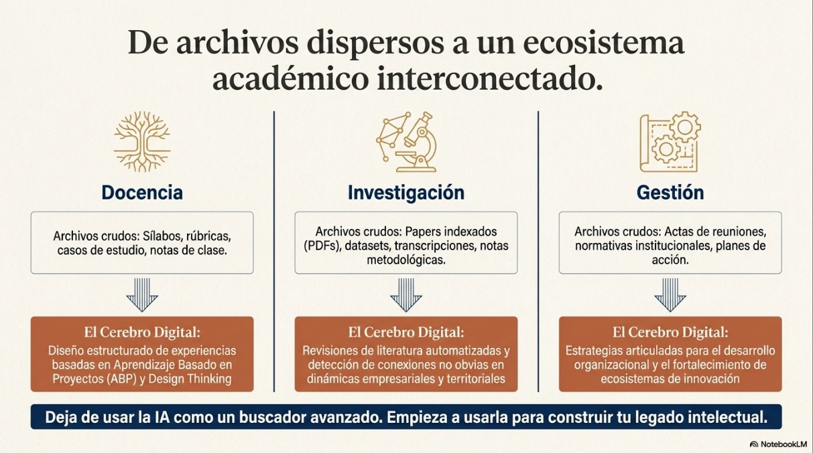

Blog de divulgación científica
Guía paso a paso: monta tu "cerebro digital" con el Método Karpathy (gratis, con Obsidian y Antigravity)
Hace poco compartí en LinkedIn cómo organicé mis procesos académicos y administrativos con lo que llamo un "cerebro digital": un sistema que hace que la inteligencia artificial deje de responder solo con lo que le preguntas en el momento y empiece a acumular, conectar y reutilizar todo lo que ya sabe sobre tu trabajo. En esta guía te explico, sin dar nada por sabido, cómo construir el tuyo, con herramientas gratuitas y sin escribir una sola línea de código.
Adiós a la "memoria de pez"
Como docente e investigador recibo cada semana normativas, artículos científicos, planes de estudio, actas de reunión y reportes de gestión. Durante mucho tiempo usé la IA como un buscador con esteroides: le pegaba un documento, le hacía una pregunta, cerraba el chat y al día siguiente volvía a empezar de cero. Cada conversación era una isla que no dejaba nada detrás.
El problema tiene nombre: las IA convencionales no acumulan lo que aprenden de ti entre una conversación y otra. Por eso, aunque le hayas explicado el mismo proyecto veinte veces, siempre te responde como si fuera la primera.

El Método Karpathy, una propuesta informal de Andrej Karpathy, miembro fundador de OpenAI parte de una idea sencilla: en lugar de usar la IA como un oráculo que responde y olvida, se le pide que construya y mantenga una wiki personal, un conjunto de notas interconectadas que crece con cada documento nuevo que le entregas.
La diferencia no es solo de almacenamiento, cuando la información está conectada, cada dato nuevo no se archiva aparte: se enlaza con lo que ya existía y hace más valioso todo el conjunto. Es, en la práctica, interés compuesto aplicado al conocimiento: mientras más documentos integras, más rápido crecen las conexiones y los hallazgos que puedes obtener de ellos.

Las tres piezas del sistema (y por qué no necesitas pagar nada)
Para replicar este flujo no necesitas saber programar ni pagar ninguna suscripción. Basta con tres piezas, todas gratuitas:
Obsidian es un programa gratuito para tomar notas en formato Markdown que además dibuja un mapa visual —un "grafo"— de cómo se conectan tus ideas entre sí.
Antigravity es el entorno de trabajo gratuito de Google que le da a un modelo de IA (Gemini) la capacidad de leer y escribir archivos directamente en tus carpetas. Es la pieza que reemplaza lo que en mi publicación de LinkedIn mostré con Claude y su función Cowork: hace exactamente lo mismo, pero sin necesidad de contratar ninguna suscripción, por lo que es la opción que recomiendo si apenas vas a empezar.
Skills son instrucciones detalladas que le enseñan a la IA, paso a paso, cómo debe leer tus documentos y organizarlos en la wiki. Más abajo puedes descargar las dos que uso yo mismo: wikiforge (para ingresar documentos nuevos) y wiki-query (para consultar lo que ya integraste).
Tutorial paso a paso
Paso 1 — Instala Obsidian y crea tu "Baúl" (Vault)
Entra a la página oficial de Obsidian y descarga la versión para Windows o Mac, es gratuito para uso personal. Instálalo como cualquier otro programa (Siguiente, Siguiente, Finalizar).
Al abrirlo por primera vez, elige la opción "Crear una nueva bóveda" (Create new vault). Dale un nombre, por ejemplo cerebro-digital, y elige en qué carpeta de tu computador quieres guardarla (puede ir dentro de tus Documentos).
Dentro de esa carpeta, crea dos subcarpetas usando el Explorador de archivos de Windows (clic derecho → Nuevo → Carpeta):
- RAW: aquí van tus documentos originales tal cual los recibes (PDF, Word, transcripciones, notas sueltas).
- WIKI: aquí es donde la IA va a crear las notas ya organizadas y conectadas. Déjala vacía; no necesitas escribir nada ahí a mano.
Paso 2 — Instala Antigravity
Descarga el instalador de Antigravity para Windows o Mac desde la página oficial de Google e instálalo siguiendo el asistente, igual que cualquier otro programa. Al abrirlo por primera vez, inicia sesión con tu cuenta de Google. No necesitas contratar ningún plan de pago para seguir esta guía.
Paso 3 — Descarga e instala las dos "skills"
Descarga los dos archivos que uso en mi propio flujo de trabajo:
Descargar wikiforge.md Descargar wiki-query.md
Ahora necesitas colocarlos dentro de la carpeta de skills de Antigravity. En Windows suele estar en una ruta parecida a esta (la ruta exacta puede variar un poco según la versión que tengas instalada):
C:\Users\TU_USUARIO\.gemini\antigravity\skills
Para llegar ahí rápido: abre el Explorador de archivos, pega esa ruta en la barra de direcciones de arriba (reemplazando "TU_USUARIO" por el nombre de tu usuario de Windows) y pulsa Enter. Si la carpeta "skills" todavía no existe, créala tú mismo con clic derecho → Nuevo → Carpeta, respetando esa misma ubicación. Luego copia ahí dentro los dos archivos .md que descargaste.
Cierra y vuelve a abrir Antigravity para que reconozca las skills nuevas.
Paso 4 — Conecta Antigravity con tu bóveda
Abre Antigravity y usa la opción para abrir una carpeta de trabajo (Open folder). Selecciona la carpeta de tu bóveda de Obsidian, la misma que creaste en el Paso 1 y que contiene las subcarpetas RAW y WIKI. A partir de aquí, todo lo que le pidas a Antigravity en esta sesión podrá leer y escribir directamente en esas carpetas.
Paso 5 — Procesa tus primeros documentos
Copia dentro de la carpeta RAW un grupo pequeño de documentos, no más de 5 o 10 para tu primera prueba (por ejemplo, un reglamento y dos o tres artículos relacionados). Luego, en el chat de Antigravity, escribe una instrucción simple:
"Usa la skill wikiforge para procesar los documentos de la carpeta RAW y organizarlos en la carpeta WIKI."
Espera mientras el sistema lee cada documento, identifica los conceptos importantes y va creando notas en Markdown dentro de WIKI, enlazadas entre sí. Abre después Obsidian y ve a la vista de grafo (el ícono de nodos conectados en la barra lateral izquierda). Vas a ver algo parecido a esta imagen real de mi propia bóveda de trabajo, con decenas de notas ya conectadas:

Paso 6 — Consulta tu wiki cuando la necesites
Cada vez que quieras encontrar algo que ya integraste, escríbele a Antigravity, por ejemplo: "Usa la skill wiki-query y dime qué información tengo sobre [tema]." La IA va a buscar primero en el índice de tu wiki, va a leer las notas más relevantes y te va a responder citando exactamente cuáles usó, para que puedas verificarlas tú mismo con un clic.
Cómo lo uso en el día a día
He aplicado este sistema en mi labor diaria con resultados que, sinceramente, no esperaba:
Seguimiento a la ejecución mensual: al procesar reportes de gestión, la IA me permite identificar patrones de cumplimiento o cuellos de botella que se repiten mes a mes, lo que facilita tomar decisiones basadas en datos históricos ya conectados entre sí.
Mapeo del estado del arte: como candidato a doctor, uso el sistema para cruzar teorías y hallazgos de distintos autores, lo que me permite visualizar de forma gráfica, en el grafo de Obsidian, los vacíos que todavía existen en la investigación.
Preparación de documentos técnicos: elaborar planes y manuales es ahora mucho más ágil, porque la IA puede redactar borradores consultando toda la base de conocimiento que he construido previamente.

Descarga las skills
Si llegaste hasta aquí y quieres ir directo a instalarlas, estos son los mismos dos archivos del Paso 3:
El futuro de la productividad académica
El Método Karpathy no es solo una técnica de archivo: es una forma de ciencia abierta y reproducible. Nos permite que las horas de estudio e investigación no se pierdan en chats efímeros, sino que se conviertan en un activo digital que crece con nosotros.
Si eres un profesional que maneja grandes volúmenes de información, te invito a dar el salto de las carpetas estáticas a una red de conocimiento viva. Puedes explorar el resto de mi Portal académico para más recursos sobre innovación educativa y administración.